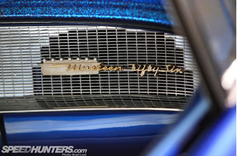
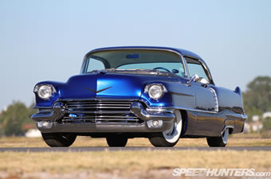
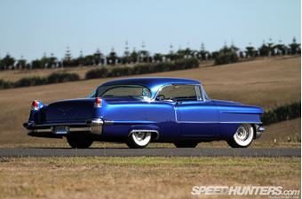
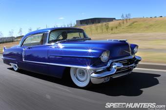

Necessary Evil:
Cruisin’ In A Mild Custom Cadi’
It’s not often I get nervous when I’m thrown the keys to someone else’s car, but then again the ’56 Cadillac I just buckled up in certainly isn’t your average ride – or at least the average when it comes to cars that I’m accustomed to driving. Piloting, or in this case ‘captaining’, a left-hand-drive car on the wrong side of the road it was designed to be driven on wasn’t the issue here. It was the shear size of the beast coupled with blunt brakes and steering best described as ‘vague’ that had me a little worried for its pristine panels and sparking chrome work. I soldiered on, pumping the gas pedal as I twisted on the key, awakening 400 cubic inches of Chevrolet V8 under the hood. It sounded grumpy. I liked it.



